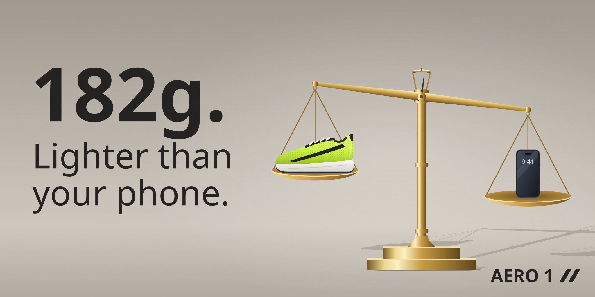
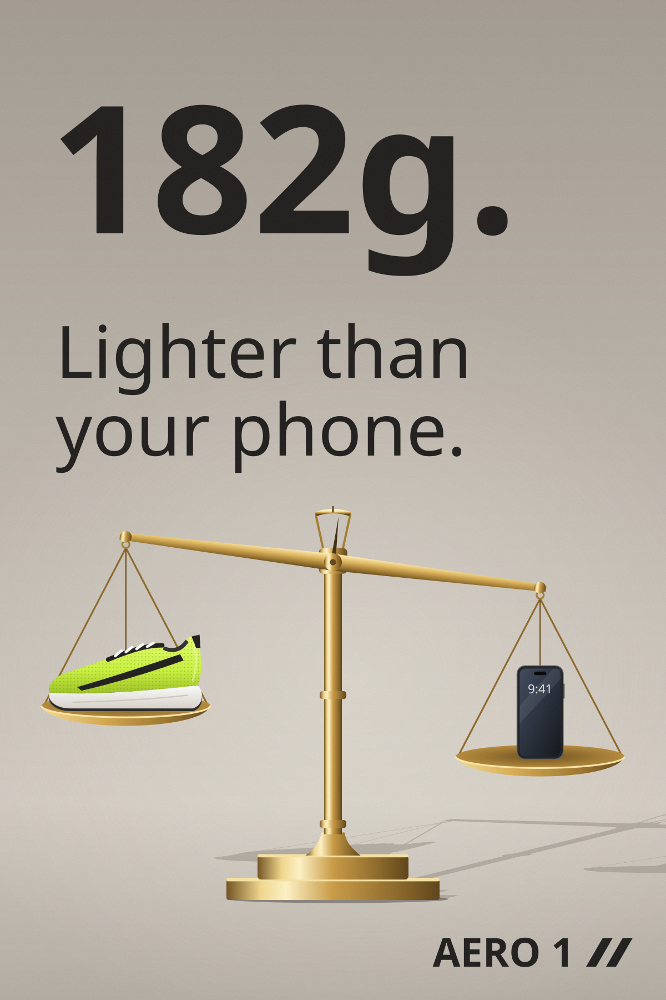
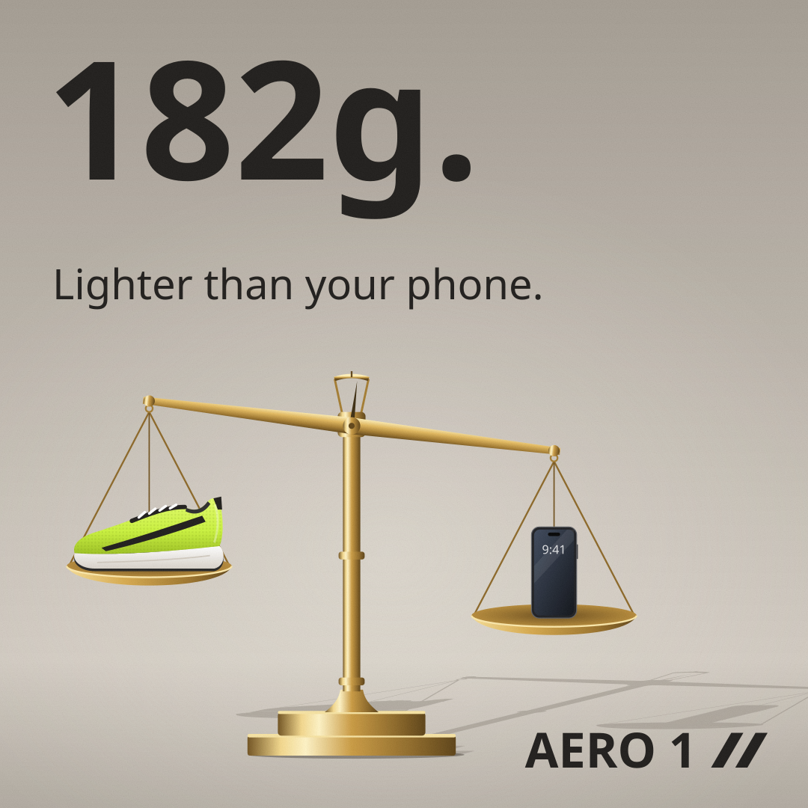
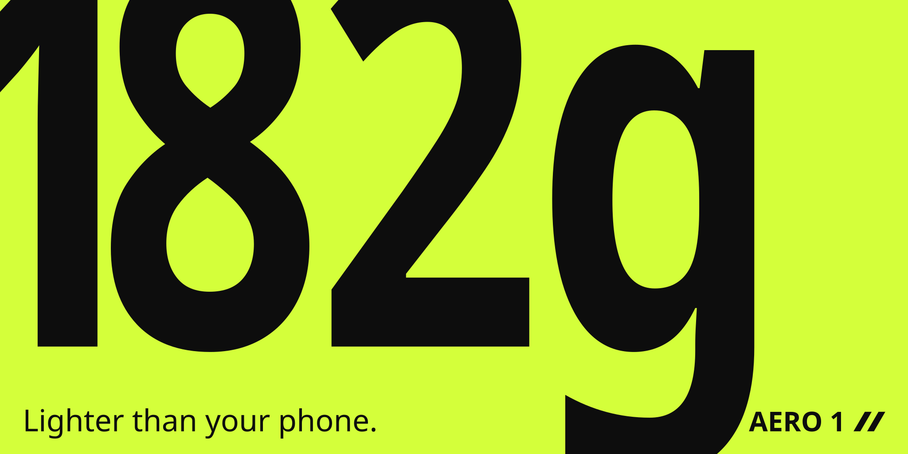
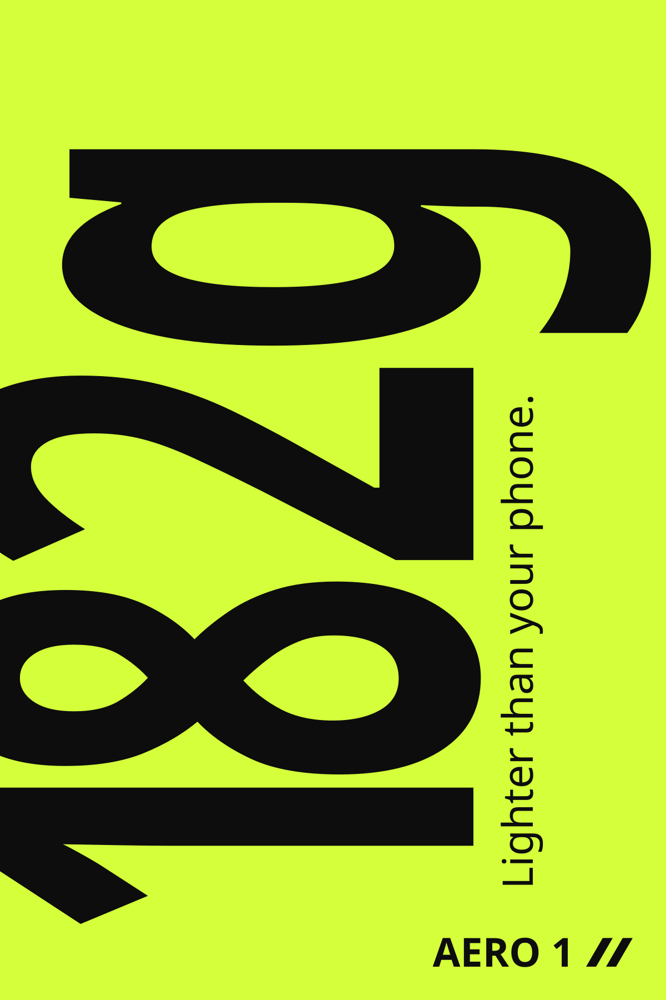
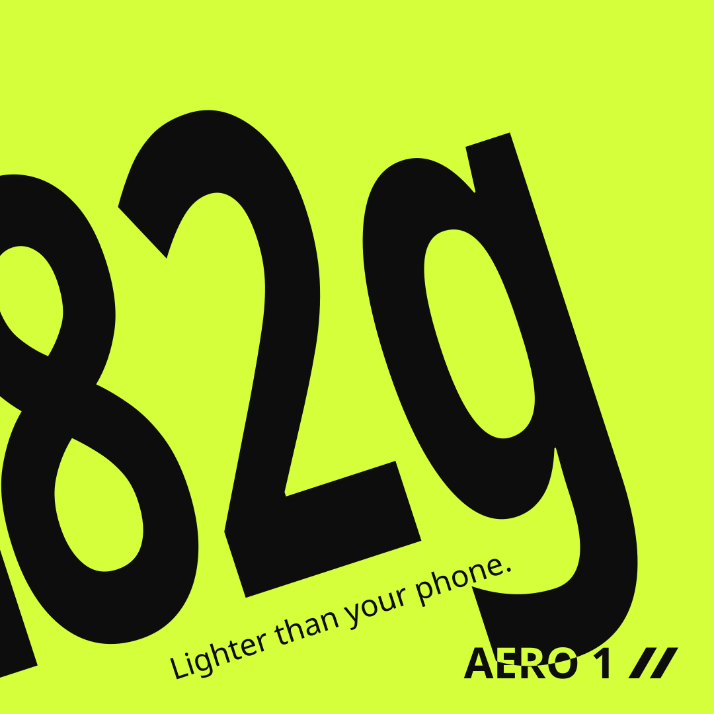
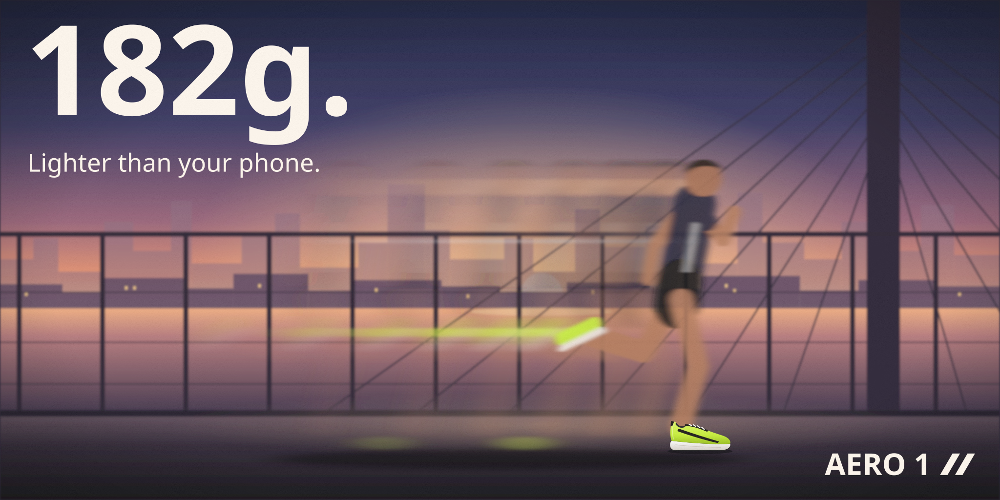
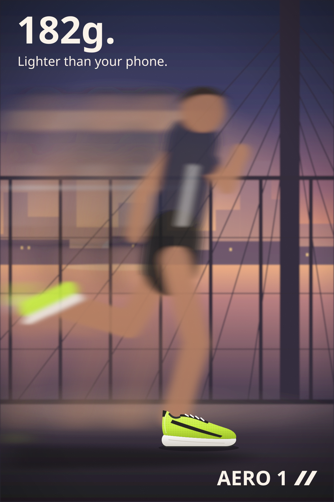
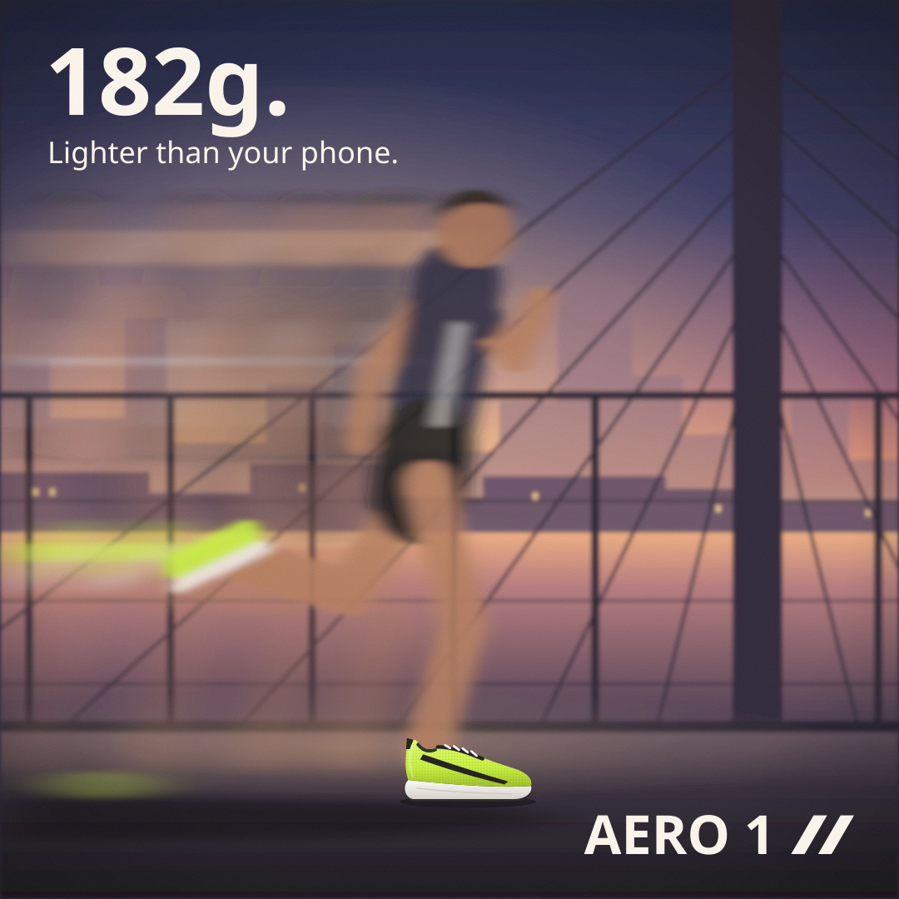

Shown at equal height. All are illustrated comps that lock composition and light for the shoot.
A brass balance scale gives the verdict: the shoe rides higher than the phone.
Argues: proof.
The claim shown as evidence you can see. It rewards a second look.



The number is the product: "182g" set so large and cropped so hard that no picture is needed.
Argues: fact as icon.
Each placement crops the number differently, so it works as a collectible series.



Lightness shown as disappearance: the runner dissolves into a blur, and only the shoe stays in focus.
Argues: sensation.
Shows what 182g feels like, not what it weighs. The runner is anonymous, so no endorsement.



The lime cell marks the best fit for each context.
| City context | A · Scale | B · Type only | C · Gone |
|---|---|---|---|
| Arterial and ring roads48-sheet · 3–5 s at speed · read from 50 m+ | GoodThe number reads, and the scale reads as a silhouette. The joke needs a second glance that drivers don't have. | StrongOne number at maximum contrast. It reads in a single glance from 100 m, and the crop is the whole message. | WeakThe dark dawn image and fine blur are lost at speed. Only the headline carries. |
| Bus shelters and transit stops6-sheet · 30 s+ dwell · 2–10 m · phone in hand | StrongThe dwell time lets the joke land, and the viewer is holding the very object being out-weighed. | GoodBold, with less reward on a long look. The changing crops pay off along a run of panels. | GoodThe backlit dawn glows, and the runner stands at near human scale beside the people waiting. |
| Running routesRiverside paths, bridges, parks · early morning | WeakA studio still life feels out of place outdoors, and it speaks to buyers rather than runners. | GoodReads at running pace, and the lime matches the gear runners notice. | StrongThe ad shows the place it stands in. Book bridge-approach sites and dawn digital slots. |
| High streets near stockistsRetail districts · purchase intent · walking pace | StrongShows the product clearly and proves the claim. It is the closest to a reason to buy. | GoodBuilds memory of the number, but you can't see the shoe you're about to buy. | WeakThe shoe is small in frame, so it builds mood rather than recognition at the shelf. |
| Creative and nightlife districtsCluttered streets · wild posting · dense signage | WeakThe warm grey and brass get lost among louder neighbours. | StrongAcid lime cuts through clutter, and repeated posters with different crops become a pattern people photograph. | GoodAtmospheric and distinctive, but it needs space around it to read. |
| Night and low-light sitesUnlit paper · street lighting · winter afternoons | GoodThe mid-tone backdrop holds up, and the brass keeps some warmth under LED light. | StrongBlack on lime survives any light source and stays legible at dusk. | WeakIt goes muddy on unlit paper. Use backlit or digital sites only. |
| Instagram feed1:1 · thumbnail first · scroll speed | GoodWorks as a carousel: show the phone first, then the reveal. | StrongThe lime square stops the thumb, even at thumbnail size. | StrongThe most saveable image, with the mood of a running photo rather than an ad. |
It has no weak rating in any context. Run it on 48-sheets and wild posting so "182g" becomes the asset people remember.
Shelters, transit and high streets near stockists give the scale joke the seconds it needs to land.
Bridges, riverside paths and dawn digital slots, plus the feed. Backlit or digital sites only.
B does the 50 m job everywhere and works at every size. A is the strongest second burst once the number is known.
Before launch: confirm the size that weighs 182g (for example, a men's US 9) and name a heavier reference phone for legal substantiation. Concept B's production font is Anton. These comps use Futura Bold compressed horizontally as a stand-in.